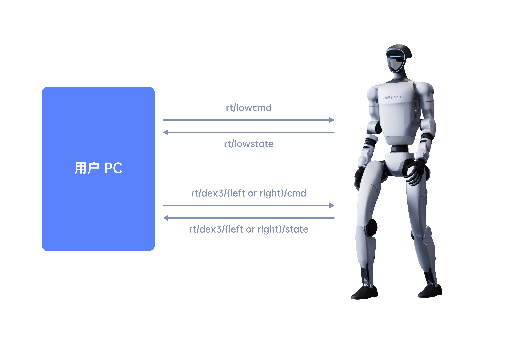

底层服务接口
底层通信提供了用户端PC（PC2/外部 PC）与机器人之间的数据交互功能。底层通信采用 DDS 协议（DDS相关知识可查阅《DDS通信接口》)。
-
订阅话题
rt/lowstate(类型:unitree_hg::msg::dds_::LowState_) 获取 G1 当前状态。 -
发布话题
rt/lowcmd(类型:unitree_hg::msg::dds_::LowCmd_) 控制全身关节电机（不含灵巧手）、电池等设备。 -
若使用 Dex3-1 力控灵巧手，需发布话题
rt/dex3/(left or right)/cmd(类型:unitree_hg::msg::dds_::HandCmd_) 控制灵巧手，并从rt/dex3/(left or right)/state(类型:unitree_hg::msg::dds_::HandState_) 话题接受灵巧手状态。

接口说明
采用 DDS通信接口 里介绍的方法订阅或发布话题。话题信息存储在由 IDL 定义的结构体中，常用结构体有：
| 结构体名称 | 说明 |
|---|---|
HandCmd_ |
Dex3-1 控制 |
HandState_ |
Dex3-1 状态 |
IMUState_ |
G1 IMU 状态 |
LowCmd_ |
G1 底层控制 |
LowState_ |
G1 底层状态 |
MotorCmd_ |
G1 电机控制 |
MotorState_ |
G1 电机状态 |
PressSensorState_ |
Dex3-1 触觉状态 |
消息类型介绍
Dex3-1 控制
unitree_hg::msg::dds_::HandCmd_
c++
struct HandCmd_ {
sequence<unitree_hg::msg::dds_::MotorCmd_> motor_cmd; // 灵巧手所有电机控制指令
};
Dex3-1 状态
unitree_hg::msg::dds_::HandState_
c++
struct HandState_ {
sequence<unitree_hg::msg::dds_::MotorState_>
motor_state; // 灵巧手所有电机状态
unitree_hg::msg::dds_::IMUState_ imu_state; // 灵巧手 IMU 状态
sequence<unitree_hg::msg::dds_::PressSensorState_>
press_sensor_state; // 灵巧手压力传感器状态
float power_v; // 灵巧手电源电压
float power_a; // 灵巧手电源电流
unsigned long reserve[2]; // 保留
};
IMU 状态
unitree_hg::msg::dds_::IMUState_
c++
struct IMUState_ {
float quaternion[4]; // 四元数 QwQxQyQz
float gyroscope[3]; // 陀螺仪(角速度) omega_xyz
float accelerometer[3]; // 加速度 acc_xyz
float rpy[3]; // 欧拉角
short temperature; // IMU 温度
};
底层控制
unitree_hg::msg::dds_::LowCmd_
c++
struct LowCmd_ {
octet mode_pr; // 并联机构（脚踝和腰部）控制模式 (默认 0) 0:PR, 1:AB
octet mode_machine; // G1 型号：4：23-Dof；5：29-Dof；6:27Dof(29Dof-锁腰)
unitree_hg::msg::dds_::MotorCmd_ motor_cmd[35]; // 身体所有电机控制指令
unsigned long reserve[4]; // 保留
unsigned long crc; // 校验和
};
底层状态
unitree_hg::msg::dds_::LowState_
c++
struct LowState_ {
unsigned long version[2]; // 版本
octet mode_pr; // 并联机构（脚踝和腰部）控制模式 (默认 0) 0:PR, 1:AB
octet mode_machine; // G1 型号
unsigned long tick; // 计时器 每1ms递增
unitree_hg::msg::dds_::IMUState_ imu_state; // IMU 状态
unitree_hg::msg::dds_::MotorState_ motor_state[35]; // 身体所有电机状态
octet wireless_remote[40]; // 宇树实体遥控器原始数据
unsigned long reserve[4]; // 保留
unsigned long crc; // 校验和
};
电机控制
unitree_hg::msg::dds_::MotorCmd_
c++
struct MotorCmd_ {
octet mode; // 电机控制模式 0:Disable, 1:Enable
float q; // 关节目标位置
float dq; // 关节目标速度
float tau; // 关节前馈力矩
float kp; // 关节刚度系数
float kd; // 关节阻尼系数
unsigned long reserve[3]; // 保留
};
电机状态
unitree_hg::msg::dds_::MotorState_
c++
struct MotorState_ {
octet mode; // 电机当前模式
float q; // 关节反馈位置 (rad)
float dq; // 关节反馈速度 (rad/s)
float ddq; // 关节反馈加速度 (rad/s^2)
float tau_est; // 关节反馈力矩
float q_raw; // 保留
float dq_raw; // 保留
float ddq_raw; // 保留
short temperature[2]; // 电机温度 (外表与绕组温度)
unsigned long sensor[2]; // 传感器数据
float vol; // 电机端电压
unsigned long motorstate; // 电机状态
unsigned long reserve[4]; // 保留
};
触觉状态
unitree_hg::msg::dds_::PressSensorState_
c++
struct PressSensorState_ {
float pressure[12];
float temperature[12];
};